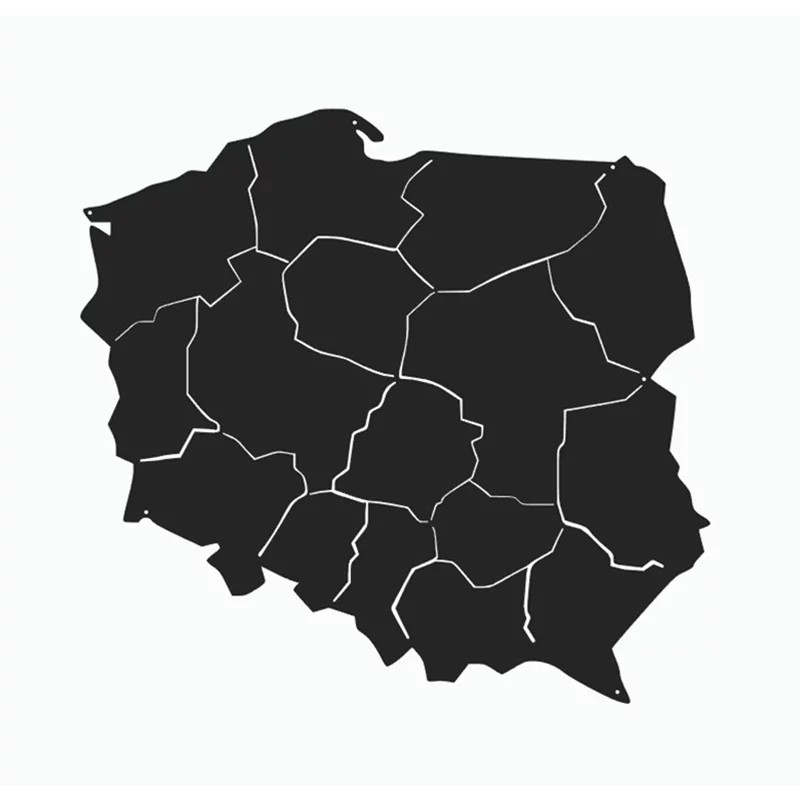

Lekcja 22: Mapa odsyłaczy
Wróć na główną!Teoria
Mapa odsyłaczy (ang. image map) w HTML pozwala podzielić jeden obraz na wiele klikalnych obszarów, które prowadzą do różnych linków.
Każdy obszar definiuje się za pomocą znacznika <area>, a całość działa dzięki powiązaniu obrazu z mapą przez atrybut usemap.
Można tworzyć różne kształty klikalnych stref: prostokąty, koła oraz wielokąty.
Mapy odsyłaczy były popularne w starszych stronach internetowych, ale nadal mogą być użyteczne np. w interaktywnych grafikach, schematach czy planach.
Mapa odsyłaczy – przykład

Kliknij na województwo Małopolskie, Mazowieckie, Wielkopolskie i Podkarpackie.
<img src="mapa.webp" usemap="#image-map">
<map name="image-map">
<area alt="Mazowieckie" title="Mazowieckie" href="https://pl.wikipedia.org/wiki/Wojew%C3%B3dztwo_mazowieckie" coords="427,290,400,324,409,366,487,477,533,499,482,482,549,496,569,414,620,384,593,328,535,266" shape="poly">
<area alt="Wielkopolskie" title="Wielkopolskie" href="https://pl.wikipedia.org/wiki/Wojew%C3%B3dztwo_wielkopolskie" coords="254,244,237,276,214,301,203,296,201,341,203,396,217,443,303,448,341,488,358,419,389,402,381,390,386,378,297,342" shape="poly">
<area alt="podkarpackie" title="podkarpackie" href="https://pl.wikipedia.org/wiki/Wojew%C3%B3dztwo_podkarpackie" coords="546,530,518,586,543,671,621,704,662,572" shape="poly">
<area alt="Małopolskie" title="Małopolskie" href="https://pl.wikipedia.org/wiki/Wojew%C3%B3dztwo_ma%C5%82opolskie" coords="417,559,390,618,417,670,533,652,517,578" shape="poly">
</map>